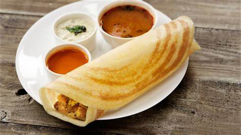

[]
South india's favorite dish DOSA

The most beloved dish in south india as well as in entire india, the DOSA!
This dish is very tasy AND very popular TRY IT NOW!
Ingredients
- 1 cup of rice
- 1/4 cup of urad dal (black gram lentils)
- 1/2 teaspoon of fenugreek seeds (optional)
- Water
- salt of taste
- Rinse the rice, urad dal, and fenugreek seeds (if using) separately in water until the water runs clear.
Then, soak them in water separately for at least 4-6 hours or overnight.
- Drain the soaked rice, urad dal, and fenugreek seeds. Place them in a blender or food processor.
Add a little water (about 1/4 cup at a time) and blend until you get a smooth, thick batter.
The batter should be slightly coarse and not too runny.
- Transfer the batter to a large bowl and add salt to taste. Mix well. The batter should be of pouring consistency but thicker than pancake batter.
Allow it to ferment in a warm place for 6-8 hours or overnight, until it doubles in volume and becomes slightly bubbly.
- Heat a non-stick or cast-iron skillet over medium heat. Grease it lightly with oil.
Pour a ladleful of dosa batter onto the center of the skillet, then quickly spread it outward in a circular motion to form a thin, even crepe.
- Cook the dosa until it becomes golden brown and crispy on the bottom side.
You can optionally add a little oil or ghee around the edges. Fold the dosa in half and serve hot with coconut chutney and sambar..